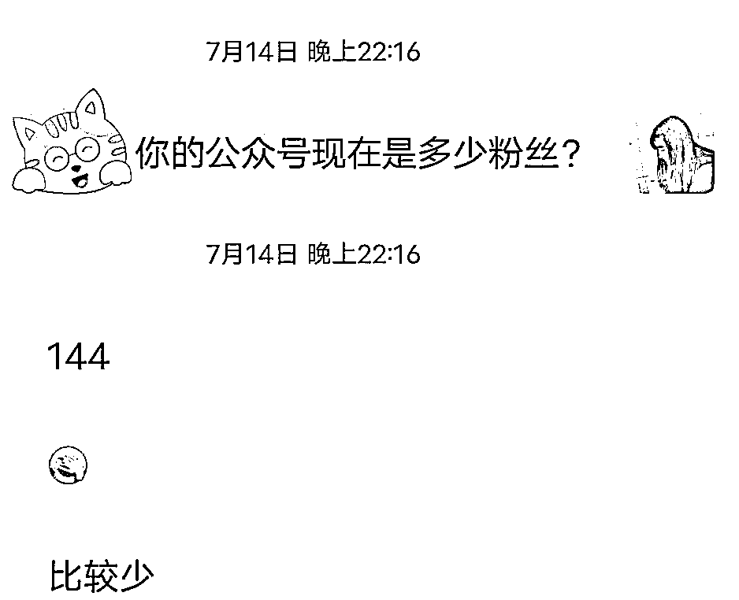
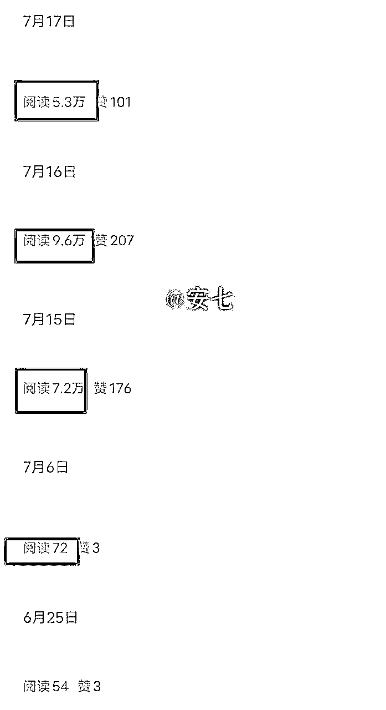
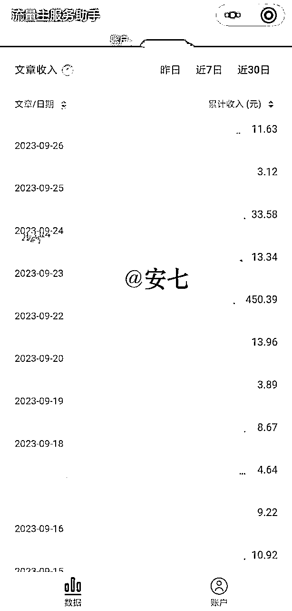
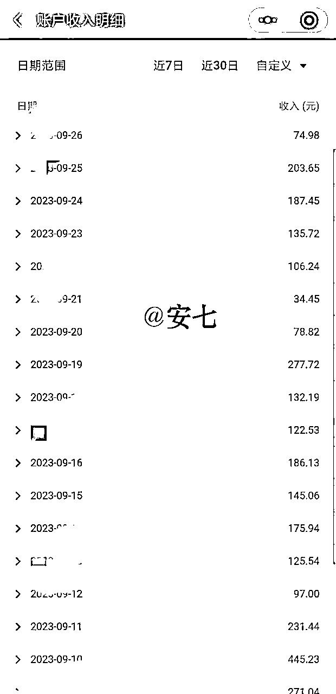
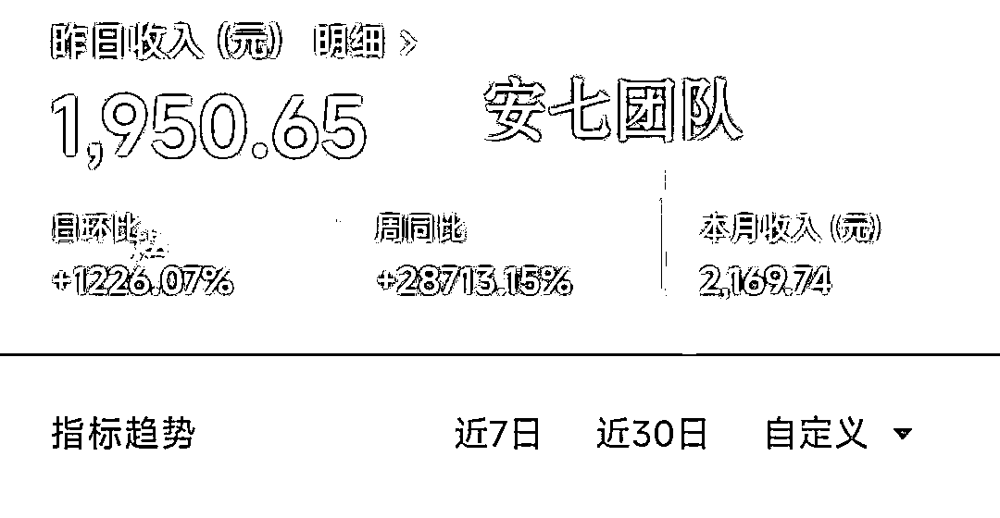
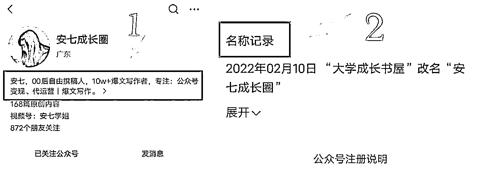
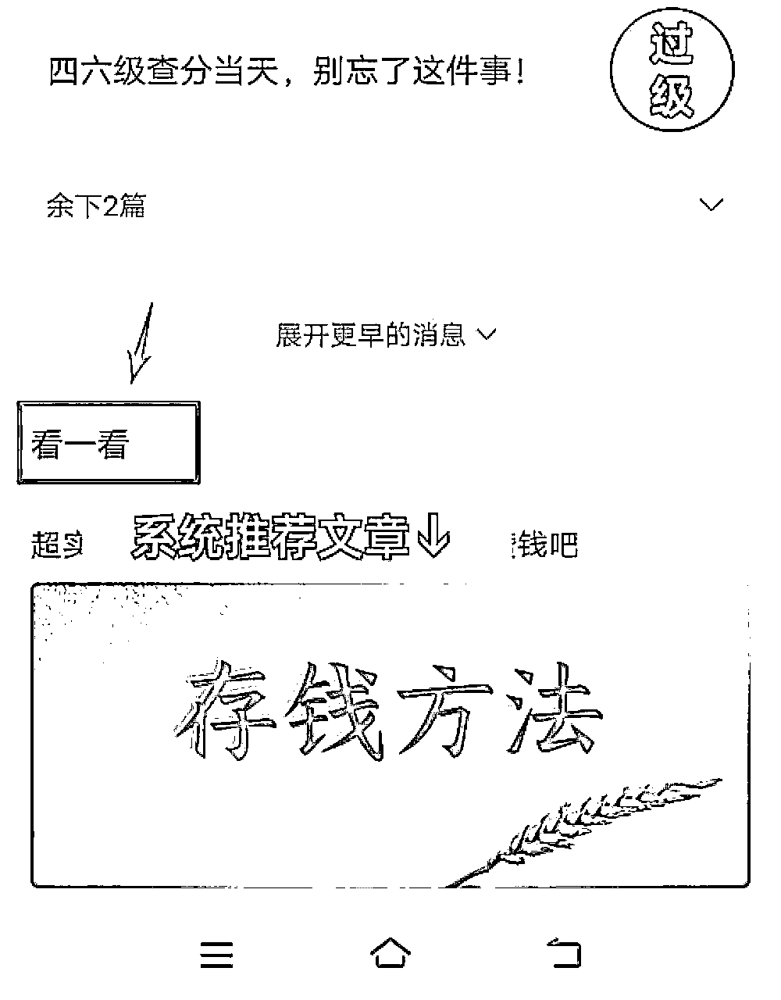
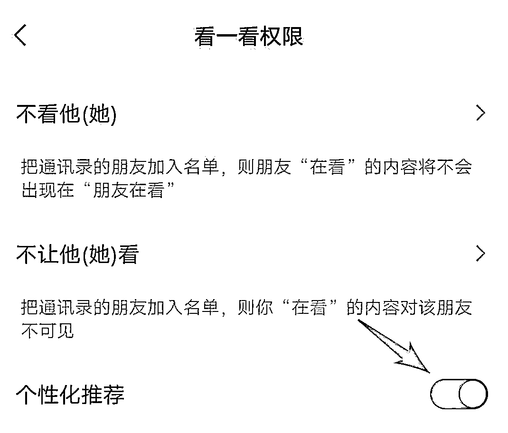

来源：https://die28mmde0k.feishu.cn/docx/WO3ZdyKMBoYkBKxgfsccWsznnVc
大家好，我是安七
10W+爆文写作人
一个不断修炼身心的文字少女
大学经济独立
毕业链接百亿集团股东做天使投资人。
23岁，我开了一家公司，提供代运营服务
9月份带领学员开始实操爆文变现，部分成绩如下：
小白学员25天写出5篇10W+、一个月副业收益5000+；
更文7篇，3篇阅读量上万、1篇阅读量39W、2篇阅读量上千；
单篇阅读量39W、单篇变现1950+；
单篇文章阅读量46W+
……
加入生财也有两三年的时间了，说来惭愧，一直在划水围观，觉得大佬太多，自己实在是没有什么拿得出手的。
前段时间报名了公众号和视频号航海，但因为精力安排的原因没有跟上，不过在航海船上遇到了第一位客户，也是人生中的贵人，航海，超值！
再一次受到圈友鸡汤的鼓励，趁新的一个月刚开始一周，也给自己和同样在围观的部分圈友们打个鸡血。
有希望，有盼头。
公众号爆文项目，听说去年就有圈友开始测试，但我7月份才开始接触到这个，算是偶然。
当时正好处在人生内耗、迷茫期，6月份大学毕业，又因为自己的状态原因，辞掉了之前的兼职工作，没有收入来源，整个人都处于一种十分低迷的状态。
没有收入来源，也没有想做的事情，干脆拿一朋友的号练练手，看看能不能把她的号“起死回生”。
如果真的做到了，会很有意思，没准也是自己能打的一个点。
想干就干吧。
但，写什么呢？看了一圈，决定写情感类的文章。
一是，之前有位老师对我说：“安七，我觉得你写情感方面的内容很有天赋”，加上两次投稿情感类都过稿，增加了这方面的信心。
二是，我观察过，原来写成长文的一位号主，转战写情感文，阅读量基本上篇篇上万。
我想：ta可行，为什么我不行？（但现在情感类的流量，没有之前那么多了）
开始哼哧哼哧写文。
朋友之前的公众号，144个粉丝，阅读量在20-50。

刚开始写情感文的时候，阅读量也差不多就10多个。
写了差不多10天，还是没有起来的趋势，都快放弃了。
但是！
就在我第二天打算放弃的时候，之前的那篇10多个阅读量的文章，居然飙升到上万了！
而且，在此后的一个月内，我写的文章基本上都是5位数的阅读量，当时最高的一篇是9.5W阅读量，差一点点就10W+了。
（10W+，对写文章、尤其是公众号的人来说，简直是一种莫大的激励。）

也就是在这个时候，命运的齿轮开始转动，我开始接触爆文、研究爆文规律。
我忽然意识到，自己写文章的模板框架、找同行爆款文章、对标拆解的方法，能不能【可复制】？
如果能，那就证明我的方法逻辑是可行的。
说干就干，我把自己实战总结的一套方法逻辑，用在另外一个公众号上。
那个号，是截然不同的领域，同样低粉。
没想到，把方法运用到那个号后，它也“活了”！
在只有10多个真实粉丝的情况下，实现了“低粉爆款”。
阅读量从几个、几十，变成几千、几万，最高的一篇，阅读量8.8W。
亲眼见到，流量主收益从一开始的几分钱，变成一天两三百，甚至更多的时候，我脑子里面开始闪过一个念头：可以用公众号流量主赚收益。


第一个月，还在跑模型的情况下，朋友的号赚了差不多3000块。
没有对比的3000块，赚的很开心、满足。
为什么选公众号爆文？
因为它：
粉丝多少没关系，只要有500粉丝开通了流量主，就能写篇文章赚篇文章的钱。
而且阅读量和粉丝数没有太大关系，和能不能掌握爆款方法有关系。
只要你有一个公众号，有500粉（不难，有渠道），会写文字，就可以开始赚钱。
开通流量主后，发布文章就有钱。
我的第一批爆款学员，都已经实现变现，没有0变现的。
目前最高变现是一个月5000+、单篇最高1900+，虽然没有生财圈友的那么多，但对旗下学员来说也很不错了，因为毕竟原来没有接触过这些，完完全全是从0开始的。

生财里面有很多关于“公众号爆文”的内容，很详细，很干货。
这里我就用 纯小白、0基础新人的视角来写，希望真的有帮助~
（如果有写的不对的地方，非常欢迎各位同行朋友评论指教~）
（1人1身份证1公众号）
公众号怎么注册？
这是官方给出的教程：（个人）注册公众平台步骤 (qq.com)
PS：1人1个身份证1个公众号，如果想通过公众号赚到更多钱，可以找信得过的家人朋友，借他们的身份证开公众号。
事先一定要协商好的利益分配（最好是具有法律效应的白纸黑字），避免后续提现分钱了，因为利益不一致闹矛盾。
单个账号变现是有限的，多开几个，东边不亮西边亮。
细节：取名字的时候，如果不知道取什么，建议叫：是XXX呀。
比如：是安七呀，是彤彤呀，是鸡汤呀……
这样取名字，看不出来是什么领域的，但什么领域都可以用，而且还可以全网同名。
你的小红书、抖音、快手等等，都可以叫这个，你只要在简介那里写一句（全网同名），别人就能通过这个名字关注到你的其他账号了，方便引流
公众号1年只能修改2次公众号名字，所以尽可能不要浪费次数。
（如果不想买粉，可以通过问一问自己试着涨粉）
PS：100粉只是能开通广告主，但广告主和流量主是不一样的，至少需要500粉，只多不少。
怎么写爆文？
写爆款文章之前，我们先要牢记几个原则：
爆款都是重复的、爆款都是重复的、爆款都是重复的。
我原来写文章，总看不起那些“同质化”严重的主题、标题、内容，十分不理解：
为什么都同质化成这样了，阅读量还这么高？
于是另辟蹊径，自己写，费尽心思写，总想“一鸣惊人”，让自己的“创意”被看见。
但往往结果很不如意，市场没有反馈，讲难听点，是我自嗨了，读者和市场都不爱看。
现在学乖了，不自己闷头哼哧哼哧写了。
而是先去看看，有哪些爆款，是不同的人、不同的时间段写，还爆了的？
比如，我刚开始写情感号的时候，有一篇文章标题叫：xx恋爱周期表
这篇文章，就100来字，配上1张xx恋爱周期表
你当时猜别人写，多少阅读量？10W+！
后来，我又看到了另外一个号写这个，也是好几万的阅读量。
于是我也写这个，当初反应平平，现在看，有7.2W的阅读量了。
啥也没有，就一张表+100来字。
你说，哼哧哼哧写的干货，居然敌不过这样的文，是不是该反思？
还是这句“爆款都是重复的”
一定是先对标低粉爆款，而不是有很多年、很多读者的老号、大号。
因为人家有粉丝基数在那里，不管怎么写，10W+都不是难事儿。
什么是低粉爆款？我们又看不到别人的粉丝啊……
判断1：它（公众号），是不是建立没多久的号？
如果是今年建立的号，大部分都是新号，粉丝数一般不太多
怎么看：

判断2：它之前的阅读量VS爆款的阅读量，相差大不大？
如果一个号，它之前的阅读量都是20、50之间，突然有一天，它一篇文章到达了上万
而且接下来还有几篇，阅读量超出平时很多的
那这个号，就是我们要找的低粉爆款号
前面2点，是要记住的，但这点，一定是要用上的。
就像那句：方法不对，努力白费
爆款找错了，自己模仿爆款写出来的内容效果，也会大打折扣
【近期】的意思是：（时间）最好是1-3天的，次考虑3-5天的，不要超过7天
【爆款】的意思是：（阅读量）最好是10W+的，次考虑5-10W，然后才是1-5W
主要是3个大的入口：
1.在你看完文章后，往下拉，会出现很多其他被系统推荐的文章。

2.在你看完文章，点赞、点在看后，文章下面也会出现其他得到系统推荐的相关类型的文章
（不要舍不得给别人点赞，你给别人点赞了，系统也能大概判断你的喜好，自动给你推荐同类型的文章
省去了很多时间，自己一个个找很麻烦的）
3.在微信首页“发现”—“看一看”—”热点“
这个里面也会出现一些系统推荐的文章，
如果你打开了“个性化推荐”，系统还会根据你的喜好，推荐你喜欢类型的文章给你。
建议大家都把“个性化推荐”给打开，避免后期大海捞针般，花很多时间去找。
前期找到方向后，一定是要【大量刷同行】的文章，后期系统知道你的喜好了，才会给你推荐。
并且一边刷，一边还要做个对标选题库，把人家的爆款文章收集起来，方便我们后期进行拆解。

分享一个超实用的小白上手模板，我的学员就是通过这个模板，一个月写出了5篇10W+。
模板：开头+段落+结尾
开头：故事/金句/热点/场景描写 开头+点题
段落：每一段直接套这个公式：
小标题：
·名人名言/金句：
·相关例子
·自己的观点
·金句
·一句话总结：
结尾：名人名言/金句+点上面的3个小标题+一句话总结。
一般来说，一个号要想获得推荐，一般要写7-21天，但有很多人都卡在这个过程中。
公众号是目前新手为数不多的变现最快的方式之一，门槛低、变现快。
只要按照正确的方法坚持，结果一定会显化。
我的一位学员，是老号，权重比较高，他只写了3篇原创文，第一篇阅读量才2位数，第二篇原创文阅读量就已经上万了。
但他没有坚持，写到第3篇，玩去了，错过了爆款后的一个趋势。
所以公众号爆款文章，一定要坚持写，一天至少1篇，有能力，一天2-5篇都OK。
不要自己给自己点广告，也不要引导别人给自己文章点广告。
流量主收益，一个是广告的展现量，一个是点击量。
很多人想钻平台空子，自己给自己点击广告，觉得这样收益会更高吧？
其实不然，系统会检测到，时间久了，它会判你的。
这个是手册里面的内容。
总是转发到社群和朋友圈，固定是那几个IP、人看，系统检测到，还是会判你。
文章发布之前，一定要检查自己的“快捷转载”有没有取消勾选？
不要打开它，如果打开快捷转载，别人能快速转载你的文章
会分走你的流量哦。
生财里面的内容和项目有很多，就像亦仁老师说的，在每一个细分领域做到极致，赚到100W不是难事儿。
虽然我目前还没有赚到100W，但经常来生财看一看、泡一泡，感受思维和行为模式的冲击，也价值巨大。
更重要的是，我通过生财，链接到人生中非常重要的几位贵人。
对于像我这样普通家庭出生、起点比较低的人来说，是需要现实世界付出极大成本、还不一定能遇到的。
虽然还是会觉得自己成绩有限，但已经找到了目前自己发展和在走的路，
一个是新媒体代运营，一个是公众号爆文变现。
只要走在路上，就一定会有不期而遇的惊喜！
感谢我的启蒙贵人@明白，大二的时候，有幸被明白老师带入生财有术，命运的齿轮开始转动。
感谢我的成长贵人@阿猫，遇到阿猫，让我误打误撞接触自媒体，看到人生更多可能性。
感谢我的人生贵人@张昭，张哥，在我毕业彷徨之际，指点迷津，战略布局眼光十分独到，其中的恩情，不是三言两语能够表达出来的！
感谢我的事业贵人@金杜—故里小姐，民宿女王故里小姐，低调的大佬，也是我的第一位代运营顾客。感谢故里小姐，在我刚开始代运营的时候，给了我代运营旗下公众号的机会。
哥说，我自带贵人运。
是的，我也是这样觉得。
好的圈子、社群，真的能达到“改命”的效果。
我既胆大，也胆小。
胆大，是因为敢于、舍得知识付费，又稍微带点“说干就干”“说走就走”的勇气
胆小，是因为在大佬云集的圈子，好像就缩起来了、不敢展示。
今天，就来把它打破！
第一次发言，第一次写生财的帖子，有点紧张、期待、兴奋。
如有写的不好的地方，还请各位圈友多多指教，感激不尽！
欢迎各位圈友链接~